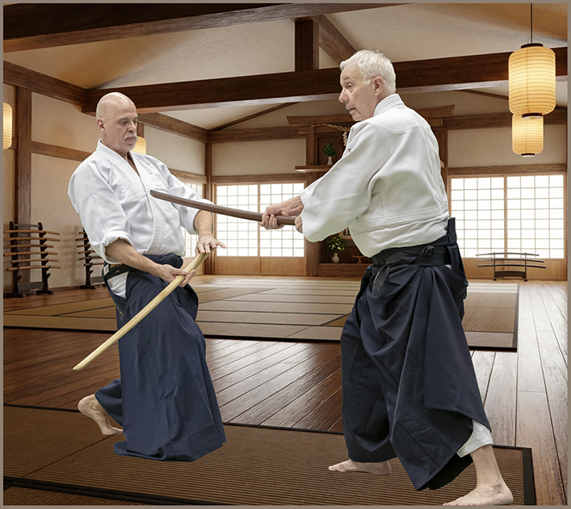
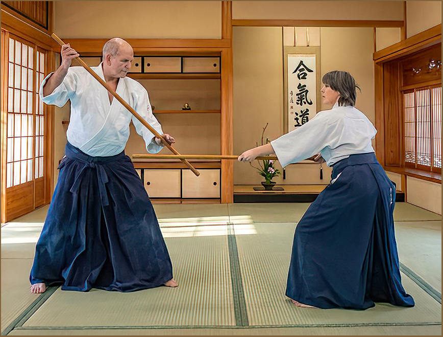
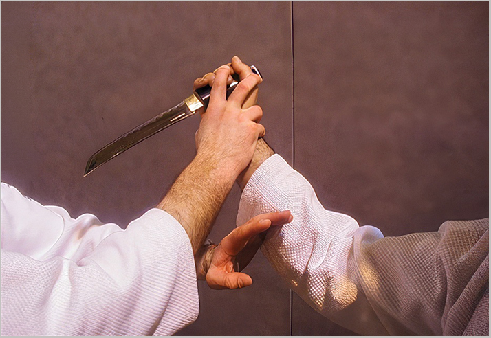

Le travail
aux armes
La pratique des armes occupe une place particulière dans l'apprentissage de l'Aïkido. Elle ne consiste pas simplement à manier un sabre ou un bâton, mais à développer une compréhension plus profonde des principes fondamentaux de l'art.
Face à une arme, l'attitude, la perception et la gestion de l'espace deviennent essentielles, car on ne réagit pas comme face à une simple attaque à mains nues.
L'entraînement avec les armes – principalement le bokken (sabre en bois), le jo (bâton) et parfois le tanto (couteau en bois) – permet de mieux comprendre la notion de distance appelée ma-ai.
Cette notion est centrale en Aïkido : savoir se placer à la bonne distance, ni trop près ni trop loin, afin de pouvoir agir efficacement tout en restant en sécurité.
Le travail des armes développe également une attitude juste et stable. Il demande précision, concentration et maîtrise du mouvement.



Chaque déplacement, chaque coupe ou blocage nécessite une attention constante, non seulement envers son partenaire mais aussi envers l'environnement.
Le travail des armes permet aussi d'améliorer la coordination, la fluidité et la respiration. Les mouvements doivent être à la fois engagés et relâchés pour maintenir l'équilibre corps-esprit.
Ainsi, ces exercices constituent un excellent complément à la pratique à mains nues, et permettent de mieux comprendre l'origine martiale des techniques.
En général, les pratiquants commencent cet apprentissage après quelques mois, lorsque les bases à mains nues sont bien acquises.